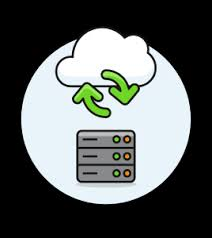
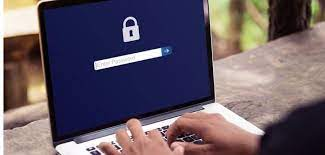
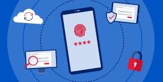
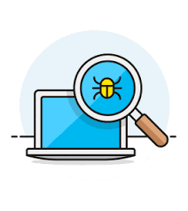

Para mantenerse seguro en línea, es importante mantener el software actualizado, utilizar contraseñas seguras y evitar hacer clic en enlaces sospechosos o descargar archivos de fuentes desconocidas.
Aunque no se recomienda utilizar redes Wi-Fi públicas, a veces es inevitable cuando no estamos en casa. Sin embargo, cuando te conectas a Internet en un lugar público y utilizas una conexión Wi-Fi pública, no tienes un control directo sobre su seguridad, lo que podría dejarte vulnerable ante ciberataques. Entonces, si utilizas una red Wi-Fi pública, evita realizar transacciones personales (como operaciones bancarias o compras en línea) en las que se utilicen datos confidenciales. Si necesitas hacer alguna de estas transacciones, utiliza una red privada virtual o VPN. Una VPN protegerá todos los datos que envíes a través de una red no segura mediante cifrado en tiempo real. Si no tienes una VPN, te recomendamos evitar las transacciones personales hasta que puedas usar una conexión a Internet de confianza. Puedes obtener más información sobre qué es una VPN aquí.
Las contraseñas son uno de los mayores puntos débiles en materia de ciberseguridad. Las personas suelen elegir contraseñas fáciles de recordar y, por lo tanto, fáciles de adivinar para los hackers. Además, utilizar la misma contraseña para varios sitios pone en mayor riesgo tus datos. Si los hackers obtienen tus credenciales de un sitio, podrían acceder a otros sitios web que utilicen los mismos datos de acceso. Elige contraseñas seguras que sean más difíciles de descifrar para los ciberdelincuentes
La autenticación de varios factores (MFA) es un método de autenticación que solicita a los usuarios que proporcionen dos o más métodos de verificación para acceder a una cuenta en línea. Por ejemplo, en lugar de solo pedir un nombre de usuario o una contraseña, la autenticación de varios factores va más allá solicitando información adicional como la siguiente:
-Respuestas a preguntas de seguridad personales.
-Una huella digital u otra información biométrica, como voz o reconocimiento facial.
La autenticación multifactor disminuye la probabilidad de que pueda producirse un ciberataque. Para que tus cuentas en línea sean más seguras, es buena idea implementar la autenticación de varios factores cuando sea posible hacerlo. También puedes considerar usar una aplicación autenticadora de terceros como Google Authenticator o Authy para ayudarte con la seguridad en Internet.
Los desarrolladores trabajan constantemente para que los productos sean seguros, vigilando las últimas amenazas y lanzando parches de seguridad en caso de hallar vulnerabilidades en el software. Mediante el uso de las últimas versiones de tus sistemas operativos y aplicaciones, te beneficiarás de los parches de seguridad más recientes. Esto es especialmente importante para las aplicaciones que contienen información sobre pagos, salud u otros datos confidenciales sobre un usuario.
Es crucial que todos los sitios web que visites sean confiables, pero en especial aquellos en los que hagas transacciones, como los sitios de comercio electrónico. Un elemento clave para tener en cuenta es un certificado de seguridad o SSL. Es decir, presta atención a que las URL empiecen con "https" en lugar de "http" (la "s" significa "seguro") y que tengan el ícono de candado en la barra de direcciones. Entre otras señales de confianza, se incluyen las siguientes:
-Texto sin errores ortográficos ni gramaticales: las marcas de renombre se esforzarán por garantizar que sus sitios web estén bien redactados y corregidos.
-Imágenes que no estén pixeladas y se ajusten correctamente a las dimensiones de la pantalla.
-Anuncios que parecen orgánicos y que no son demasiado abrumadores.
-Sin cambios bruscos de color o tema. En algunos casos, cuando los usuarios habían interactuado con un sitio web concreto y vuelven a una página conocida desde un vínculo, los cambios sutiles de color o de diseño podrían indicar una falsificación.
-Normas aceptadas para los pagos en línea: los sitios web legítimos de comercio electrónico solo utilizan portales de tarjetas de crédito o débito, o PayPal. Si un sitio web utiliza otra forma de transferencia de dinero digital para aceptar pagos, es posible que sea fraudulento.
A las personas que se dedican a la comercialización de productos les encanta saber todo sobre ti, pero también a los hackers. Ambos pueden obtener gran cantidad de datos a partir de tus hábitos de navegación y uso de las redes sociales. De todos modos, puedes controlar la cantidad de información a la que pueden acceder terceros. Tanto los navegadores de Internet como los sistemas operativos móviles tienen configuraciones que te permiten proteger tu privacidad en línea. Los sitios de redes sociales, como Facebook, Twitter, Instagram, LinkedIn, entre otros, tienen configuraciones para mejorar la privacidad que puedes activar. Merece la pena tomarse un tiempo para revisar la configuración de la privacidad en todos los ámbitos y asegurarse de que está configurada a un nivel con el que te sientas cómodo.
Un clic descuidado puede exponer tus datos personales en línea o infectar tu dispositivo con malware. Por eso, es esencial navegar de forma consciente y evitar ciertos tipos de contenido en línea, como los vínculos de fuentes no confiables y los correos electrónicos spam, los cuestionarios en línea, el ciberanzuelo, las ofertas "gratuitas" o los anuncios no solicitados. Si recibes un correo electrónico que no te convence, evita hacer clic en los vínculos o abrir los archivos adjuntos.
Es importante que tus dispositivos estén protegidos correctamente, ya que hasta un 60 % de las personas utilizan dispositivos móviles, en lugar de una computadora de escritorio, para comprar y buscar información en Internet. Es una buena práctica usar contraseñas o códigos de acceso y otras opciones de seguridad como lectores de huellas digitales o tecnología de escaneo facial con todos tus dispositivos (teléfonos, computadoras, tablets, relojes inteligentes, televisores inteligentes, etc.). Estas medidas reducirán la probabilidad de un ciberataque o de que los hackers roben tus datos personales.
Es fundamental hacer copias de seguridad de la información personal importante en discos duros externos y crear nuevas copias de seguridad con regularidad. El ransomware, un tipo de malware, consiste en que los ciberdelincuentes bloquean tu computadora para que no puedas acceder a archivos valiosos. Crear una copia de seguridad de tus datos y de los de tu familia ayuda a mitigar el impacto de un ataque de ransomware. Puedes protegerte aún más si tienes el software de seguridad adecuado. Otras formas de malware te niegan el acceso a tus datos personales saturando el sistema o simplemente borrando archivos, así que ten cuidado.
Uno de los principales objetivos de los ciberdelincuentes es engañarte para que descargues malware, el cual puede utilizarse para abrir una "puerta trasera" en tu máquina. El malware puede disfrazarse de aplicación, desde un juego popular hasta una aplicación que comprueba el tráfico o el clima. O podría estar oculto en un sitio web malicioso que intenta instalar malware en tu dispositivo.El malware causa daños, como la interrupción del funcionamiento de tu dispositivo, el robo de tus datos personales o el acceso no autorizado a tu máquina. Esto suele requerir alguna acción por tu parte, pero también hay descargas ocultas, donde un sitio web intenta instalar software en tu computadora sin pedirte permiso primero. Piénsalo bien antes de visitar un nuevo sitio web o descargar cualquier archivo en tu dispositivo y descarga contenido solo de fuentes de confianza u oficiales. Comprueba tus carpetas de descargas con regularidad y, si aparecen archivos desconocidos en el sistema, (quizá de una descarga oculta), elimínalos de inmediato.
Internet no tiene una tecla para eliminar. Los comentarios o las imágenes que publicas en línea pueden permanecer en Internet para siempre, ya que eliminar el original no elimina las copias que otras personas puedan tener. No hay forma de “retractarse” de un comentario que desearías no haber hecho o de eliminar una imagen vergonzosa que hayas publicado. Entonces, no publiques en línea nada que no quieras que vean tus padres ni un empleador.
Del mismo modo, ten cuidado al revelar información personal sobre ti en línea. Por ejemplo, evita revelar tu número de Seguro Social, tu dirección o tu fecha de nacimiento en las biografías de las redes sociales. Seguro que no compartirías información personal con una persona desconocida; por eso, no la compartas con millones de personas en línea.Ten cuidado de dónde muestras o subes tu dirección de correo electrónico. Es buena idea tener una cuenta de correo electrónico secundaria que puedas descartar y que solo uses para registros y suscripciones por correo electrónico para diferenciarla de la cuenta que usas con amistades y familiares y de la cuenta usas en el trabajo.
Las personas que conoces en línea no siempre son quienes afirman ser. De hecho, incluso podrían no ser reales. Los perfiles falsos en las redes sociales son una forma muy popular de que los hackers preparen a los incautos usuarios de Internet y les roben sus ciberbolsillos. Aplica la misma precaución en tu vida social en línea que en tu vida social en persona. Esto es especialmente cierto con el aumento de las estafas en las citas en línea en los últimos años.
Lamentablemente, las noticias falsas, la desinformación y la mala información están presentes en Internet. Es fácil sentirse perdido con la avalancha de información a la que estamos expuestos cada día. Si lees algo de lo que no estás seguro, investiga por tu cuenta para los hechos. Los sitios web confiables tendrán referencias a la información original y a las fuentes. Las páginas sospechosas no ofrecen ninguna referencia
Además de seguir los consejos de seguridad para el comportamiento en línea, es esencial usar un proveedor de antivirus de buena calidad. El software de seguridad en Internet protege tus dispositivos y tus datos, y bloquea las amenazas más comunes, como los virus y el malware, además de las más complejas, como las aplicaciones espía, los cryptolockers y los ataques de scripting entre sitios (XSS). Igual que con los sistemas operativos y las aplicaciones, es esencial mantener actualizado tu antivirus para adelantarte a las últimas ciberamenazas.
